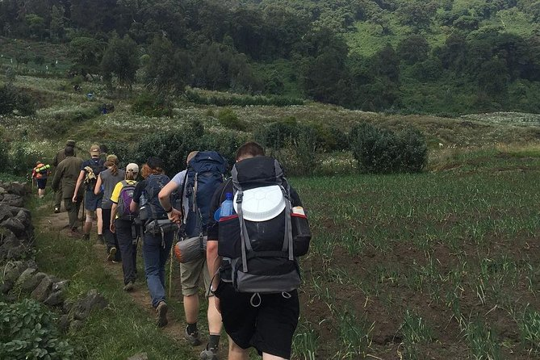
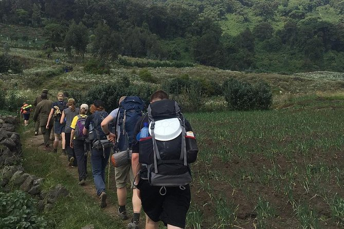

.gif)
.jpg)
.jpg)
.jpg)
Mount Karisimbi Hiking in Rwanda
Mount Karisimbi is the highest of the volcanoes found within the Virunga ranges of mountains. It is the eleventh highest in Africa. This inactive volcano is found in the Volcanoes National Park and along the Climbing Mount Karisimbi Volcanoborder between Rwanda and the Democratic Republic of Congo. Rising up to 4,507 meters, Mount is surrounded by other neighboring volcanoes like Mikeno, Nyiragongo and Bisoke. The mountain gets its name Karisimbi (Kinyarwanda for “White Shell”) from the snow that usually covers the top during the dry season. Karisimbi has a caldera Branca and two craters in the summit with the largest being
Visitors to the Volcanoes National Park in Rwanda usually combine Gorilla trekking with a Karisimbi mountain hike
Climbing mount Karisimbi can be a strenuous but special experience. Because of its location within the Volcanoes National Park, hikers should expect to come across several bird species, Hiking Mount Karisimbi Volcanosee golden monkeys or mountain gorillas (occasionally). There is even the possibility of visiting the grave of Dian Fossey, a famous primatologist who studied mountain gorillas extensively.
The trail and path towards the summit of Karisimbi contains great landscape, volcanic features, dense forest and vegetation which are beautiful to behold. However, the hike may involve navigating through thick jungle, steep slopes and muddy trails in the rainy season. It’s for this reason that hiking Mount Karisimbi is best done during the drier periods between December to March and June to early October.
.webp)
.jpg)
.jpg)
.jpg)
Facts, Weather and Hike Costs
One needs to be in good shape, have the endurance and stamina that is required to navigate through steep and difficult sections of the mountain slopes. This is especially important if you are hiking in a group. You wouldn’t want to keep your fellow hikers waiting for you. Hikers also need to prepare mentally for the high altitude conditions which can be distressing and hence a cause for slowing one down.
Mount Karisimbi Hiking can be organized using a local Tour Operator. The Tour Operator should secure the permits, organize tents, meals and other hiking equipment. Extra Porters are available for hire at a cost of about $20. These extra porters can help carry heavy cameras, tents and other hiking equipment.
Mount Karisimbi Hiking is usually completed in 2 days. Hikers need to first go to the park headquarters to register and be briefed by the park Warden and Guides. Hiking Mount KarisimbiAfter the briefing, hikers are driven to the starting point which is located at the foot of Mount Bisoke
Ascending to the summit lasts 7 hours at most but hikers often stop mid-way (at an altitude of 3,700 meters) for the night. A camp is set where dinner is prepared as everyone takes a rest in preparation for the final climb the nest day. After enduring the cold night and having early morning breakfast, Hikers should be fresh and ready to get to the summit.
This final push takes only 1 hour but is the most challenging. That is because the section from the camp to the summit is steeper and more difficult to navigate – especially if there is thick mud, strong winds and fog which reduces visibility.
Once at the summit, the scenery is spectacular and beautiful to behold. Hikers should have great views of the Muhabura volcano, the Nyamulagira volcano, Nyiragongo, the great forests/vegetation within the Virunga ranges and the Democratic Republic of Congo. After getting enough of the great views, Hikers should get ready for a 6 hour descent back to the starting point and then to the park office.
.png)
.jpg) 


Packing List and Tips for Hiking Mount Karisimbi
The Volcanoes National Park provides Guides and Rangers to help with navigating through the different trails but hikers should come with:
Karisimbi Hiking Permits
Hiking permits for Karisimbi are usually acquired from the park headquarters, the Rwanda Development Board or a reliable Tour Operator. It is possible to acquire the permit on the day of the hike but we recommend that you book in advance just to make sure the activity is not sold out.Mount Karisimbi Permits cost $400 per person. sanders safaris can help you arrange the entire tour by providing transportation, booking accommodation, arranging for porters/hiking equipment and securing hiking permits. We highly recommend hiking the top of this volcano alongside gorilla tracking for those with great endurance and stamina. mount kalisimbi is a life changing experience and will never this you the same. Take a moment to enjoy this magical and thrilling adventure when you have an opportunity to trek.
üìã Itinerary
On arrival our meet and greet representative will take you through immigration, pick your luggage, the necessary COVID TEST for the gorilla trek then handle over to your host/guide.
A short drive to the hotel as you have a short briefing by your host/guide, check in. Relax at the hotel. Optional city exploration if your flight is arrives earlier in the day.
Details for Day 2:Enjoy a relaxed breakfast before you meet your guide, set off for Musanze enjoying a scenic drive as you traverse the a thousand hills of Rwanda. Arriving in time to visit the new Ellen DeGeneres Campus of Dian Fossey Gorilla Fund.
After lunch embark on one of the most beautiful scenic drives you have been on with a few stops for pictures along the way and learning more about Rwanda and the rural life/communities..
Details for Day 3:In the morning 6:30 am, you will go for pre trekking briefing at the park headquarters before going for the gorilla trekking adventure in the forest. Trekking may take 3-6 hours depending on the movement of the gentle giants (our close cousins) you will visit. Stay in the presence of the gorillas for a maximum of one hour before returning back. In the evening, enjoy a relaxed evening at the lodge
Early in the morning 6:30 am, you will go for the golden monkey trek another endangered species living \ on the foot hills of the Virunga Massive in Volcanoes National Park a short trekking experience where you spend an hour with the monkeys. On return, you will go have lunch at the lodge and set off to Kigali for an earlier dinner before you head to the airport for your departure
Accommodation Options
Kigali
Musanze
END OF SAFARI
Rwanda's Wildlife
Rwanda is a very diverse country with over 4 national parks, one of the few destinations where you can see 2 great apes (Mountain Gorillas and Chimpanzees) and the big 5 game wildlife (lion, leopard, elephant, rhino, and buffalo) on one safari. On a Rwanda Tour, you have more than just wildlife viewing activities like coffee and tea tours, kayaking, canoeing, cultural/community tours, biking/cycling tours, and hiking as some of the active tours.
Time to Visit Rwanda
The best time to visit Rwanda is during the dry seasons from June to September and December to February. These periods are ideal for wildlife viewing, especially gorilla trekking.
Currency in Rwanda
Rwanda uses the Rwandan Franc (RWF) as its currency. Major currencies like USD and Euros are widely accepted in hotels and tourist areas, but it's advisable to carry some local cash for smaller purchases.
Rwanda's Culture
Rwanda has a rich culture, known for its traditional music, dance, and crafts. The Rwandan people are friendly and hospitable, and cultural experiences include visiting local communities and enjoying traditional meals.
Travel Documents
A valid passport is required to enter Rwanda. Visitors may need a visa depending on their nationality. It's recommended to apply for an eVisa or a visa on arrival for convenience.
Health Requirements
Visitors should have a yellow fever vaccination certificate and consider vaccinations for hepatitis A and B. Malaria prophylaxis is also recommended for travelers.
Our Location
Visit us in Musanze, Rwanda—a gateway to the majestic Volcanoes National Park. Enjoy the breathtaking scenery, cultural experiences, and the best of Rwandan hospitality.